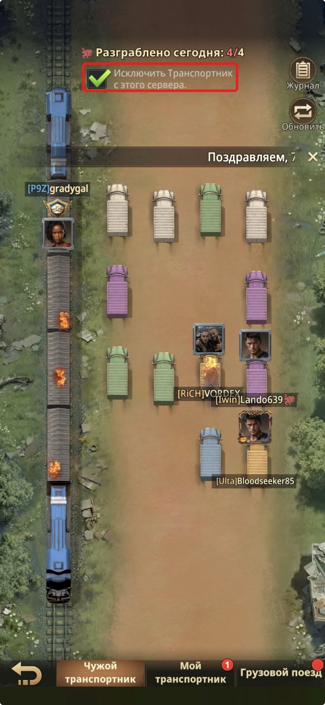
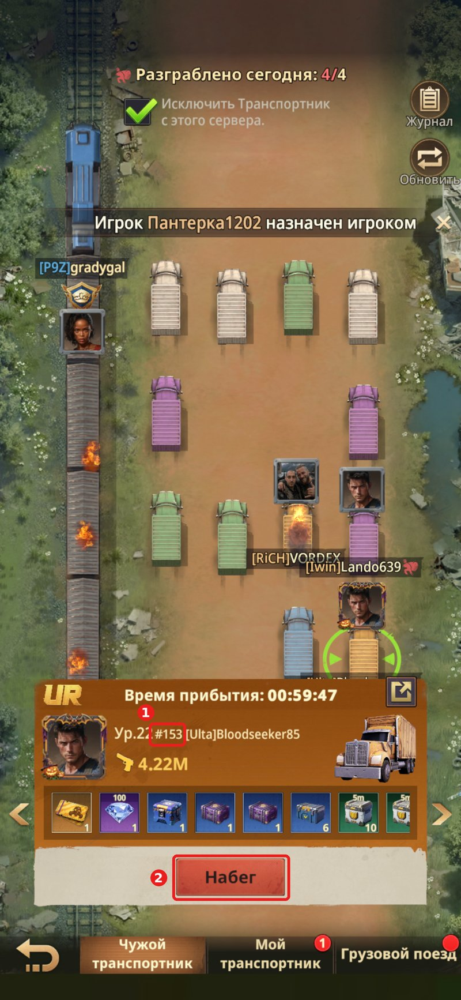
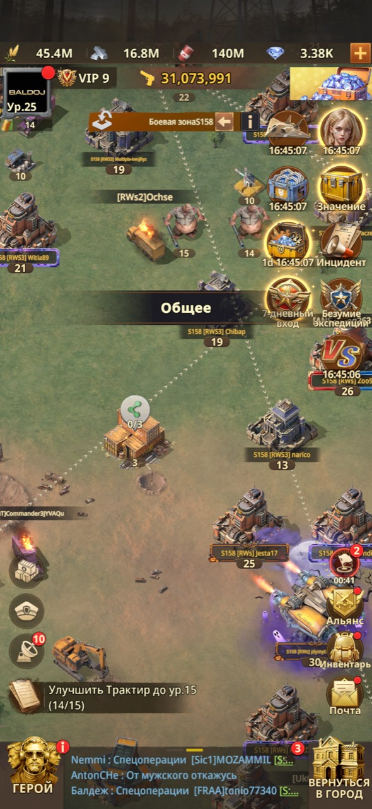
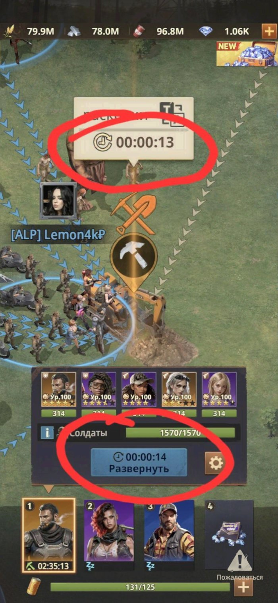

Правила альянса
Прочитай обязательно. Незнание правил не освобождает от предупреждения.
Основные правила
Мы ценим вклад каждого, но особенно — ответственность Лидера и Р4. В чатах сохраняем уважительный тон. Лидер и Р4 принимают решения исходя из общей пользы для альянса, поэтому просим доверять их оценке и не подрывать авторитет 🤍
Обязательная активность
Если не получается быть активным 2–3 дня подряд — предупреди лидера или Р4.
Вклад в развитие
Активно нажимаем ручку и помогаем союзникам. Участвуем в еженедельных ивентах и мероприятиях альянса (раскопки и т.д.) 🤝
Коммуникация
В чате пишут важную информацию — принимай её к сведению. Тебе всегда помогут и покажут, куда нажимать ❤️
Дисциплина и конфликты
За оскорбления и провокации — предупреждение. При повторном нарушении — исключение из альянса. Все споры разбирает лидер или нейтральный Р4.
🚂 Поезд: посадка только по очереди
Мест в поезде меньше, чем участников альянса. Чтобы поездки и награды распределялись справедливо, все соблюдают очередь. Наличие свободного места не означает, что его можно занять вне своего дня.
- Перед посадкой проверь расписание поезда. Садиться в вагон можно только в тот день, когда твой ник указан в составе пассажиров. В каждом составе — 20 человек.
- В очереди участвуют Р3 и Р4, кроме машинистов. Если твоего ника нет в составе на сегодня — дождись своей очереди. Если есть вопрос по списку, обратись к лидеру или Р4 до посадки.
- Список участников пересматриваем каждую неделю. Неделя расписания идёт со вторника по понедельник. Перед поездкой сверяйся с актуальным составом на сайте.
Что означают ранги
Р2 — новички на испытательной неделе
В первую неделю смотрим на активность, участие в жизни альянса и соблюдение правил. Если ты хорошо себя показал, руководство переводит тебя в Р3 — после этого тебя включают в пассажирскую очередь. Само по себе истечение недели не означает автоматического повышения.
Р3 — участники пассажирской очереди
После испытательной недели получаешь возможность ездить по расписанию. Ранг Р3 не даёт права садиться в любой день: очередь обязательна для всех.
Р1 — кандидаты на исключение
В Р1 находятся игроки, которых руководство рассматривает на исключение из альянса в первую очередь. Р1 не участвуют в пассажирской очереди.
Грузовики
Открой «Чужой транспортник» и поставь галочку «Исключить Транспортник с этого сервера». Так ты не будешь грабить своих.

Спецоперации
Грабим спецоперации только на чужом сервере, за который дают звёздочку. Спецоперации своего сервера не трогаем. Просто перейти на любой чужой сервер недостаточно: сначала проверь, что это нужный сервер на сегодня.
- Нажми на транспортник и посмотри номер сервера — он написан сразу после уровня игрока, например #153 (рамка 1).
- Сверь номер с актуальным чужим сервером со звёздочкой на сегодня. Наш #157 не трогаем. Если нужный сервер пока не знаешь, спроси у альянса.
- Это сегодняшний чужой сервер со звёздочкой — жми «Набег» (рамка 2).

Как находить контейнеры на чужом сервере
Не ограничивайся поиском в списке: контейнеры спецопераций можно находить прямо на карте другого сервера и отправлять в чат альянса, чтобы союзники тоже смогли их ограбить.
- Сначала перейди на чужой сервер. Ориентируйся на номер боевой зоны вверху карты: он должен отличаться от нашего #157. На скриншоте показан чужой сервер S160. Если ты ещё на своём сервере, сначала узнай актуальный сервер со звёздочкой и перейди на него — цели своего сервера не трогаем.

- Отдали карту до нужного масштаба. Базы должны оставаться рисунками зданий, а не превращаться в точки. Под зомби и ресурсными точками при этом видны цифры уровней. На чужом сервере базы на такой карте отображаются золотыми — это дополнительный ориентир; номер сервера всё равно проверяй.

- Ищи спецоперации, за которые дают звёздочку. Нужные контейнеры обычно двухэтажные — это ориентир для поиска. Главное условие: чужой сервер со звёздочкой на текущий день; один только цвет контейнера или цифра под ним не определяют подходящую цель.
- Открой контейнер и поделись им с альянсом. Если возле значка рук написано 0/3, нажми квадратную кнопку со стрелкой в правом верхнем углу окна контейнера и выбери [ALP] АльфА.
- После ограбления тоже можно поделиться. Если появляется надпись или кнопка «ПОДЕЛИТЬСЯ», нажми её и так же выбери [ALP] АльфА.

Как выглядит нужный контейнер

Раскопки
- Нашёл раскопки в радаре? Сообщи в общий чат альянса или отправь туда сами раскопки, чтобы руководство поставило таймер.
- Когда до раскопок остаётся меньше 3 минут, вверху посередине экрана появляется плашка с обратным таймером — как перед вступлением в должность в столице. Плашка видна везде: и в городе, и на карте.
- Следите за временем обратного таймера и за тем, за сколько ваш отряд дойдёт до раскопок. Когда они совпадут — в этот момент отправляйте отряд на раскопки. Так в 00:00 все отряды начнут раскопки одновременно, и каждый участвовавший игрок получит награду на ПОЧТУ.
- Подходи ближе: занимай ресурсные точки или заходи в крепость к союзнику.

Видео: как войти в раскопки
Если не открывается YouTube — смотри на RuTube.